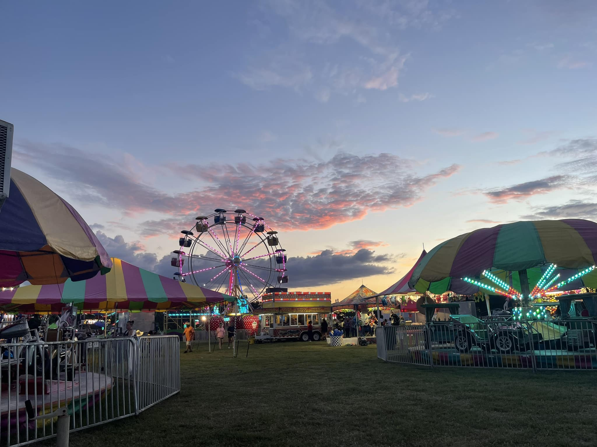

"Continuing the Tradition!" — One admission gets you into all events!
For 81 years, the Tippah County Fair & Livestock Show has been the highlight of summer in Ripley, Mississippi. Hosted at the Tippah County Coliseum & Fairgrounds, the fair brings together families, farmers, and friends from all across the region.
From carnival rides that light up the night sky to championship livestock shows, a rodeo, live music, contests, and unforgettable fair food — there's something for everyone. Best of all, one admission gets you into all events each day.
Join us July 31 – August 8, 2026 as we continue the tradition!

The latest announcements, schedule changes, photos, and event news are posted directly to the official Tippah County Fair Facebook page. The live feed to the right updates automatically.
Follow us so you never miss an announcement!
📘 Follow on FacebookNine days of rides, livestock shows, rodeo, music, and food. One admission gets you into all events!
Bring the whole family — gates are free Monday through Wednesday. Rides available with a wristband.
Talent Contest Fri, Aug 7 · Rodeo Fri & Sat nights in the Outdoor Arena. Youth Night is Thursday, Aug 6!
TippahNews.com has the full story — "Tippah County Fair announces schedule for 2026 edition" — plus local news from across Tippah County.